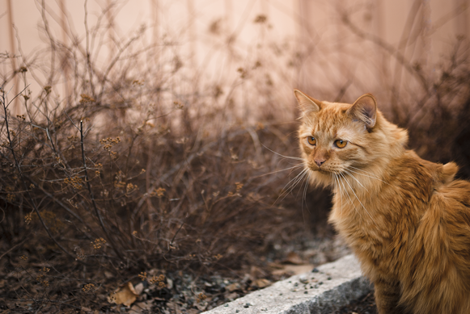
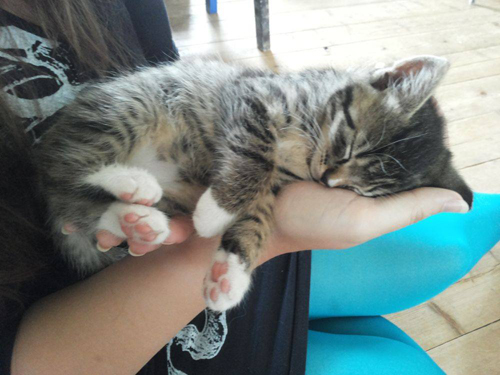
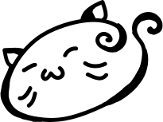

Välkommen
Copycat
Ett av veckans delmoment var att göra en kopia av en sida, enligt en bildreferens. Väldigt givande, och smått frustrerande pillergöra till viss del. Här kommer länken till mitt försök: Copycat
Skrivet av Moa, 2014-10-02
Katterrrrr
För labb 2.7 ska det skivas ett nytt blogginlägg med lite bilder i, och det är ju förstås ett ypperligt tillfälle att bombardera webben
med mer kattbilder, för det finns det ju knappast tillräckligt av. Här till höger har vi min katt Layton, döpt efter Professor Layton förstås,
min orangea odåga som är min allra bästa och störigaste kompis. Han fyllde två år i sommar, men beter sig som en kattunge fortfarande, och har lite
för mycker engergi!

Här till vänster är familjens nytillskott, Albus, döpt efter tidernas mäktigaste trollkarl givetvis. Albus kom till oss nu i september, han gillar
allra mest att sova och börjar redan bli lite smygfet.
Skrivet av Moa, 2014-09-26
Vektorgrafik
Här kommer ett exempel på vektorgrafik i svg-format!
Skrivet av Moa, 2014-09-16
Videotaggen!
Här kommer ett test på hur man kan lägga upp videos på sin hemsida!
Skrivet av Moa, 2014-09-09
Hay!
På den här bloggen kommer jag att skriva om laborationerna i min kurs Webbteknisk Introduktion, och även publicera materialet som jag producerar.
Skrivet av Moa, 2014-09-04